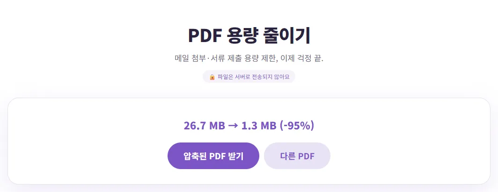
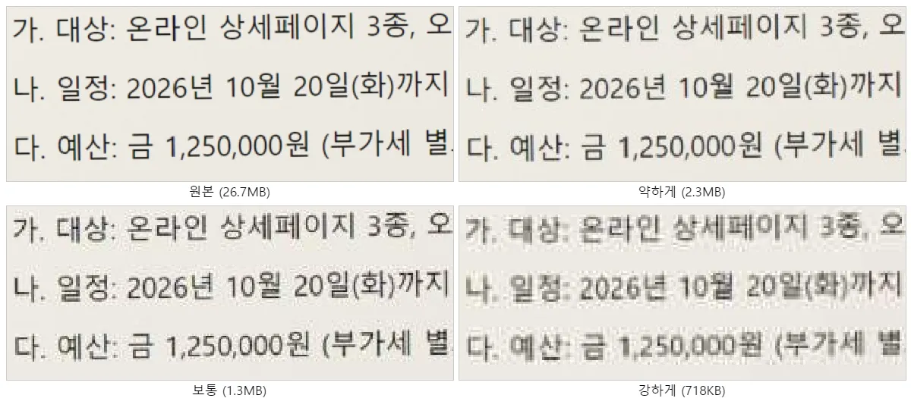
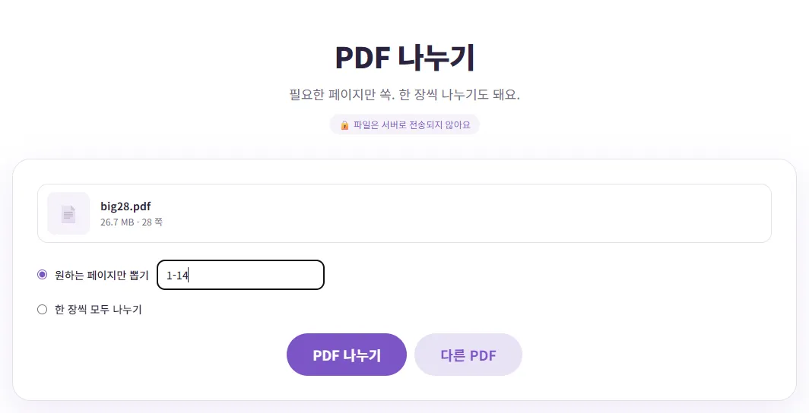

PDF 용량이 커서 메일이 안 보내질 때, 어떻게 할까요?
서류를 다 모아 PDF로 만들었는데 메일에 붙이니 '첨부 용량 초과'가 뜨거나, 제출 사이트가 '10MB 이하'라며 받아 주지 않을 때가 있죠? PDF가 왜 커졌는지부터, 압축 강도를 어떻게 고를지, 그래도 크면 어떻게 나눠 보낼지 직접 해 본 숫자로 알려 드릴게요.
PDF가 큰 이유는 대부분 '사진'이에요
글자로만 된 PDF는 수십 쪽이어도 보통 1MB가 안 돼요. 테스트로 만든 4쪽짜리 글자 PDF는 142KB였어요. 반면 스캔한 서류나 휴대폰으로 찍은 사진을 묶은 PDF는 쪽마다 사진 한 장이 통째로 들어 있어서, 쪽수만큼 용량이 불어나요. 이번에 휴대폰 사진(4032×3024) 28장을 원본 그대로 넣어 만든 28쪽 PDF는 26.7MB였어요.
파일 크기는 윈도우 파일 탐색기의 '크기' 칸이나 휴대폰 파일 앱의 정보 화면에서 볼 수 있어요. 메일에 여러 파일을 함께 붙인다면 한 파일이 아니라 모두 더한 크기가 기준이라는 점도 기억하세요. 아래 표의 Gmail 안내도 '총 첨부파일 크기'를 기준으로 말하고 있어요.
내 PDF가 어느 쪽인지 알아보는 간단한 방법이 있어요. PDF를 열어 글자를 마우스로 끌어 선택해 보세요. 글자가 한 글자씩 선택되면 글자 PDF, 쪽 전체가 그림처럼 한 덩어리로 잡히거나 아예 선택이 안 되면 스캔(사진) PDF예요. 용량 줄이기 효과가 큰 건 스캔 PDF 쪽이에요.
메일 첨부 한도는 서비스마다 달라요
각 서비스의 공식 안내에서 확인한 내용이에요. 한도는 바뀔 수 있으니 보내기 전에 한 번 더 확인하세요.
| 서비스 | 공식 안내 내용 |
|---|---|
| Gmail (개인 계정) | 첨부파일 제한 25MB. 넘으면 첨부파일을 Google Drive 링크로 바꿔 넣음. 회사·학교 계정은 관리자가 정함 |
| Outlook.com | 전자 메일 크기 제한 20MB(첨부와 본문 포함). 회사용 Exchange 계정은 기본 10MB |
| 다음 메일 | 첨부 합계가 25MB를 넘으면 이후 파일은 대용량 첨부로 바뀌어 발송(다음 메일 주소로 보낼 때) |
Gmail과 다음 메일처럼 한도를 넘으면 자동으로 링크로 바꿔 주는 곳도 있지만, 받는 쪽 회사가 외부 링크를 막아 두었거나 링크 보관 기간이 지나면 열리지 않을 수 있어요. 받는 사람이 파일 자체를 원한다면 용량을 줄이는 게 확실해요. 그리고 받는 쪽 메일 서버에도 따로 한도가 있을 수 있으니, 한도에 딱 맞추기보다 여유 있게 줄이는 게 안전해요.
압축 강도, 이렇게 고르세요
벤토툴 PDF 용량 줄이기는 각 쪽을 그림으로 다시 그린 뒤 JPG로 저장해서 새 PDF를 만들어요. 강도에 따라 그리는 해상도와 JPG 품질이 달라지는데, 26.7MB짜리 28쪽 스캔 PDF로 세 가지를 모두 해 봤어요.
| 강도 | 결과 용량 | A4 한 쪽의 그림 크기 | 어울리는 경우 |
|---|---|---|---|
| 약하게 (화질 우선) | 2.3MB | 1190×1683 (약 144dpi) | 작은 글씨·도장이 많은 서류, 출력할 문서 |
| 보통 (추천) | 1.3MB (-95%) | 892×1262 (약 108dpi) | 대부분의 메일 첨부·제출 서류 |
| 강하게 (가장 작게) | 718.3KB | 654×926 (약 79dpi) | 용량 제한이 아주 빡빡할 때 |

같은 부분을 확대해 보면 차이가 보여요. '보통'까지는 글자가 또렷했고, '강하게'는 글자 둘레가 번지고 얼룩이 생겼지만 읽는 데는 문제가 없었어요. 작은 각주나 흐린 도장이 있는 서류라면 '강하게'는 피하는 게 좋아요.

압축 전에 꼭 알아 둘 점
- 글자 선택·검색이 안 돼요: 쪽을 그림으로 바꾸기 때문에 압축한 PDF에서는 글자를 선택하거나 검색할 수 없고, 문서 안 링크도 사라져요. 원본은 따로 보관하세요.
- 글자 PDF는 거의 안 줄어요: 142KB짜리 글자 PDF를 넣어 보니 '보통'과 '약하게'는 오히려 커져서 도구가 원본을 그대로 돌려주며 '더 줄어들지 않았어요'라고 알려 줬어요. '강하게'는 108.9KB(-23%)가 됐지만 글자 선택이 안 되는 PDF가 됐어요. 글자 PDF가 크다면 사진이 들어 있는지 먼저 보세요.
- 강도는 파일을 올리기 전에: 파일을 고르는 즉시 압축이 시작돼요. 강도를 바꾸고 싶으면 '다른 PDF'를 누르고 강도를 고친 뒤 다시 올리세요.
그래도 크면: 나눠서 보내기
쪽수가 아주 많으면 줄여도 한도를 넘을 수 있어요. 이럴 땐 PDF 나누기로 쪽 범위를 나눠 메일 여러 통으로 보내면 돼요. 26.7MB짜리 28쪽 PDF를 '1-14'와 '15-28'로 나누니 각각 13.4MB, 13.3MB가 됐어요. Gmail 25MB 안에는 각각 들어가요.

순서는 먼저 나누고, 나눈 파일을 각각 압축하는 걸 권해요. 나누기는 뽑은 쪽에 실제로 들어 있는 그림만 새 파일에 담아요. 직접 해 보니 사진 한 장씩 들어간 6쪽짜리 1.66MB PDF에서 1쪽만 뽑으면 277KB가 됐어요. 쪽마다 사진 크기가 비슷하면 쪽수에 거의 비례해서 줄어드는 셈이에요. 나눈 파일이 아직 크면 그 파일만 다시 압축하면 되고, 압축은 남은 쪽만 다시 그리기 때문에 통째로 압축할 때보다 기다리는 시간도 짧아요. 휴대폰 사진으로 PDF를 만드는 중이라면, 처음부터 사진을 두 묶음으로 나눠 이미지 PDF 변환을 두 번 하는 것도 간단한 방법이에요.
나눌 때 범위는 쪽수를 반으로 자르기보다 내용 단위로 나누는 게 좋아요. 예를 들어 '신청서·계약서'와 '증빙 서류'처럼 나누면 받는 사람이 필요한 파일만 열어 볼 수 있어요. '한 장씩 모두 나누기'를 고르면 쪽마다 따로 된 PDF가 ZIP 파일 하나로 내려오는데, 메일 첨부가 너무 많아지니 쪽수가 적을 때만 쓰세요.
나눠 보낼 때는 메일 제목에 '(1/2)', '(2/2)'처럼 번호를 붙이고, 파일 이름에도 쪽 범위를 적어 두면 받는 사람이 헷갈리지 않아요. 나눈 파일을 받는 쪽에서 다시 하나로 합쳐야 한다면 PDF 합치는 법을 함께 알려 주세요.
상황별 정리
| 상황 | 추천 순서 |
|---|---|
| 스캔 PDF가 한도를 조금 넘어요 | '보통'으로 압축 |
| 작은 글씨·도장이 중요해요 | '약하게'로 압축, 그래도 크면 나누기 |
| 한도가 아주 작아요 (예: 2MB) | '강하게'로 압축 후 글자가 읽히는지 확인 |
| 쪽수가 아주 많아요 | 먼저 나누고, 나눈 파일을 각각 압축 |
| 글자 위주 PDF인데 커요 | 압축 효과가 작아요. 들어 있는 사진을 줄여 다시 만들거나 나누기 |
파일은 서버로 올라가지 않고 내 브라우저 안에서 처리돼요. 휴대폰 사진으로 서류 PDF를 처음 만드는 과정은 서류 사진을 PDF로 만드는 법에 정리해 두었어요.